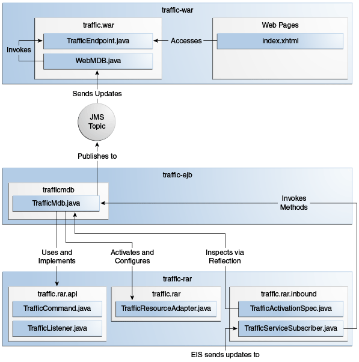

{"report":[
{"city":"City1", "access":"AccessA", "status":"GOOD"},
{"city":"City1", "access":"AccessB", "status":"CONGESTED"},
...
{"city":"City5", "access":"AccessE", "status":"SLOW"}
]}
El Ejemplo traffic
El ejemplo de traffic demuestra cómo implementar y usar un adaptador de recursos de
entrada simple que recibe datos de un EIS heredado usando un socket TCP.
El ejemplo está en el directorio tut-install`/examples/connectors/traffic`. Consulte el Capítulo 2, "Uso de los Ejemplos del Tutorial," para obtener información básica sobre la creación y ejecución de aplicaciones de muestra.
El ejemplo demuestra el escenario de la Figura 56-3 y consta de los siguientes módulos:
-
traffic-eis: Un programa Java SE que simula un EIS -
traffic-rar: La implementación del adaptador de recursos de entrada -
traffic-ejb: Un bean controlado por mensajes que es el punto final para los mensajes entrantes -
traffic-war: Una aplicación web que muestra información del bean controlado por mensajes -
traffic-ear: Un archivo empresarial que contiene el adaptador de recursos, el bean controlado por mensajes y la aplicación web
Figura 56-3 El ejemplo traffic

El módulo traffic-eis es un proyecto auxiliar que se asemeja a un sistema de
información de tráfico heredado. Contiene un programa Java SE que envía actualizaciones del estado
del tráfico de varias ciudades a cualquier cliente suscrito. El programa envía las actualizaciones
en formato JSON a través de un socket TCP. Por ejemplo, una actualización de tráfico se ve así:
El módulo traffic-rar implementa el contrato de entrada de la arquitectura del
conector Java EE. Este módulo se suscribe al sistema de información de tráfico utilizando el
puerto TCP indicado por la configuración proporcionada por la MDB e invoca los métodos de la MDB
para procesar las actualizaciones de la información de tráfico.
El módulo traffic-ejb contiene un bean controlado por mensajes que activa el
adaptador de recursos con un parámetro de configuración (el puerto TCP para suscribirse al
sistema de información de tráfico). El MDB contiene un método para procesar las actualizaciones de
información de tráfico. Este método filtra las actualizaciones de una ciudad en particular y
publica los resultados en un tema de Java Message Service (JMS).
El módulo traffic-war contiene un bean controlado por mensajes que recibe
actualizaciones de información de tráfico filtrado del tema JMS de forma asincrónica y las envía a
los clientes mediante un punto final WebSocket.
Uso del Adaptador de Recursos de Entrada
En la mayoría de los casos, los desarrolladores de aplicaciones Java EE utilizan adaptadores de recursos de entrada desarrollados por un tercero. Para utilizar un adaptador de recursos de entrada, una aplicación Java EE incluye un bean controlado por mensajes con las siguientes características.
-
El MDB implementa la interfaz empresarial definida por el adaptador de recursos.
-
El MDB especifica los parámetros de configuración para activar el adaptador de recursos.
La interfaz empresarial definida por el adaptador de recursos no está especificada en la Arquitectura de los Conectores de JavaEE; es específico para el EIS.
El MDB en este ejemplo se define de la siguiente manera:
@MessageDriven(
activationConfig = {
@ActivationConfigProperty(propertyName = "port",
propertyValue = "4008")
}
)
public class TrafficMdb implements TrafficListener { ... }
La interfaz TrafficListener está definida en el paquete de la IPA del adaptador de
recursos. El adaptador de recursos requiere que la MDB proporcione la propiedad
port.
Cuando se implementa la MDB, activa el adaptador de recursos traffic-rar, que
invoca los métodos de la MDB para procesar las actualizaciones de información de tráfico. Luego,
el MDB filtra las actualizaciones para una ciudad en particular y publica los resultados en un
tema JMS.
En este ejemplo en particular, la interfaz TrafficListener está vacía. Además de
esta interfaz, el adaptador de recursos proporciona la anotación TrafficCommand y
usa la reflexión para descubrir qué métodos en el MDB están decorados con esta anotación:
@MessageDriven(...)
public class TrafficMdb implements TrafficListener {
@TrafficCommand(name="report", info="Process report")
public void processReport(String jsonReport) { ... }
...
}
Este enfoque le permite adaptar la MDB para admitir nuevas funciones en el EIS sin tener que
modificar la interfaz TrafficListener o el módulo del adaptador de recursos.
Implementación del Adaptador de Recursos de Entrada
El módulo traffic-rar implementa el contrato de adaptador de recursos de entrada de
la Arquitectura de los Conectores de JavaEE para el sistema de información de tráfico simple
(EIS) utilizado en este ejemplo. La arquitectura del adaptador de recursos de entrada se muestra
en la Figura 56-4.
Figura 56-4 Arquitectura del Ejemplo traffic

El módulo traffic-rar implementa las interfaces enumeradas en la
Tabla 56-3.
Tabla 56-3 Interfaces Implementadas en el Módulo Traffic-rar
|
Paquete |
Interfaz |
Descripción |
|
|
|
Define los métodos de ciclo de vida del adaptador de recursos. |
|
|
|
Define los parámetros de configuración que proporciona la MDB para activar el adaptador de recursos de entrada. |
|
|
|
El suscriptor del servicio de tráfico implementa esta interfaz desde el contrato de gestión de trabajo para esperar actualizaciones de tráfico en un subproceso separado. |
Cuando un MDB activa el adaptador de recursos de entrada, el contenedor invoca el método
endpointActivation en la clase TrafficResourceAdapter:
@Connector(...)
public class TrafficResourceAdapter implements ResourceAdapter, Serializable {
...
@Override
public void endpointActivation(MessageEndpointFactory endpointFactory,
ActivationSpec spec)
throws ResourceException {
Class endpointClass = endpointFactory.getEndpointClass();
/* this method is called from a new thread in the example:
MessageEndpoint endpoint = endpointFactory.createEndpoint(null); */
}
}
El método getEndpointClass devuelve el tipo Class del MDB que realiza
la activación, lo que permite que el adaptador de recursos utilice la reflexión para buscar
métodos anotados con @TrafficCommand en el MDB.
El método createEndpoint devuelve una instancia de la MDB. El adaptador de recursos
utiliza esta instancia para invocar los métodos de la MDB cuando recibe solicitudes del EIS.
Después de obtener la instancia de punto final de mensaje (MDB), el adaptador de recursos usa el
contrato de administración de trabajo para crear el subproceso de suscriptor de servicio de
tráfico que recibe actualizaciones de tráfico del EIS. El adaptador de recursos obtiene la
instancia de WorkManager del contexto de arranque de la siguiente manera:
WorkManager workManager;
...
@Override
public void start(BootstrapContext ctx) ... {
workManager = ctx.getWorkManager();
}
El adaptador de recursos programa el subproceso del suscriptor del servicio de tráfico mediante el administrador de trabajo:
tSubscriber = new TrafficServiceSubscriber(tSpec, endpoint);
workManager.scheduleWork(tSubscriber);
La clase TrafficServiceSubscriber implementa la interfaz
javax.resource.spi.Work del contrato de gestión de trabajo.
El subproceso del suscriptor del servicio de tráfico usa la reflexión para invocar los métodos en el MDB:
private String callMdb(MessageEndpoint mdb, Method command,
String... params) ... {
String resp;
/* this code contains proper exception handling in the sources */
mdb.beforeDelivery(command);
Object ret = command.invoke(mdb, (Object[]) params);
resp = (String) ret;
mdb.afterDelivery();
return resp;
}
For more details, see the code and the comments in the traffic-rar module.
Para Ejecutar el Ejemplo traffic
Puede usar el EID de NetBeans o Maven para compilar, empaquetar, implementar y ejecutar el
ejemplo de traffic.
Aquí se tratan los siguientes temas:
Para Ejecutar el Ejemplo traffic Usando el EID de NetBeans
-
Asegúrese de que el servidor GlassFish se haya iniciado (consulte Arrancando y Parando el Servidor GlassFish).
-
En el menú Archivo, elija Abrir proyecto.
-
En el cuadro de diálogo Abrir proyecto, vaya a:
tut-install/examples/connectors -
Seleccione la carpeta
traffic. -
Haga clic en Abrir proyecto.
-
En la pestaña Proyectos, expanda el nodo
traffic. -
Haga clic con el botón derecho en el módulo
traffic-eisy seleccione Abrir proyecto. -
Haga clic con el botón derecho en el proyecto
traffic-eisy seleccione Ejecutar.Los mensajes del EIS aparecen en la pestaña Salida:
Traffic EIS accepting connections on port 4008 -
En la pestaña Proyectos, haga clic con el botón derecho en el proyecto
trafficy seleccione Limpiar y Construir.Este comando compila y empaqueta el adaptador de recursos, la MDB y la aplicación web en un archivo EAR y lo implementa. El registro del servidor muestra la secuencia de llamadas que activa el adaptador de recursos y las actualizaciones de tráfico filtradas para City1.
-
Abra la siguiente URL en un navegador web:
http://localhost:8080/traffic/La interfaz web muestra actualizaciones de tráfico filtradas para City1 cada pocos segundos.
-
Después de cancelar la implementación de la aplicación
traffic-ear, cierre la aplicacióntraffic-eisdesde la barra de estado.
Para Ejecutar el Ejemplo traffic Usando Maven
-
Asegúrese de que el servidor GlassFish se haya iniciado (consulte Arrancando y Parando el Servidor GlassFish).
-
En una ventana de terminal, vaya a:
tut-install/examples/connectors/traffic/traffic-eis/ -
En una ventana de terminal, vaya a:
mvn installEste comando construye y empaqueta el tráfico EIS.
-
Ingrese el siguiente comando en la ventana de terminal:
mvn exec:javaLos mensajes del EIS aparecen en la ventana del terminal:
Traffic EIS accepting connections on port 4008Deje esta ventana de terminal abierta.
-
Abra una nueva ventana de terminal y vaya a:
tut-install/examples/connectors/traffic/ -
Introduzca el siguiente comando:
mvn installEste comando compila y empaqueta el adaptador de recursos, la MDB y la aplicación web en un archivo EAR y lo implementa. El registro del servidor muestra la secuencia de llamadas que activa el adaptador de recursos y las actualizaciones de tráfico filtradas para City1.
-
Abra la siguiente URL en un navegador web:
http://localhost:8080/traffic/La interfaz web muestra las actualizaciones de tráfico filtradas para City1 cada pocos segundos.
-
Después de cancelar la implementación de la aplicación
traffic-ear, presione Ctrl+C en la primera ventana de terminal para cerrar la aplicacióntraffic-eis.